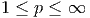
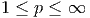

diagonalizável, isto é, existe um conjunto
diagonalizável, isto é, existe um conjunto
 de autovetores de
de autovetores de  tais que qualquer elemento
tais que qualquer elemento  pode ser
escrito como uma combinação linear dos
pode ser
escrito como uma combinação linear dos  . Sejam
. Sejam  o conjunto de
autovalores associados aos autovetores tal que um deles seja dominante, ou
seja,
o conjunto de
autovalores associados aos autovetores tal que um deles seja dominante, ou
seja,
Consideremos uma matriz diagonalizável, isto é, existe um conjunto
de autovetores de tais que qualquer elemento pode ser
escrito como uma combinação linear dos . Sejam o conjunto de
autovalores associados aos autovetores tal que um deles seja dominante, ou
seja,

 ,
,  , pode ser
escrito com combinação linear dos autovetores da seguinte forma:
, pode ser
escrito com combinação linear dos autovetores da seguinte forma:
 | (4.26) |
O método da potência permite o cálculo do autovetor dominante com base no comportamento assintótico (i.e. "no infinito") da sequência

Por questões de convergência, consideramos a seguinte sequência semelhante à anterior, porém normalizada:


 está na forma (4.26), então  pode ser escrito
como
está na forma (4.26), então  pode ser escrito
como
 | (4.27) |
Como a norma de  é igual a um, temos
é igual a um, temos


 , então
, então


Observe que um múltiplo de autovetor também é um autovetor e, portanto,

 .
.
Uma vez que temos o autovetor  de
de  , podemos calcular
, podemos calcular  da seguinte
forma:
da seguinte
forma:
 |
Observe que a última identidade é válida, pois  por construção.
por construção.
E 4.7.1. Calcule o autovalor dominante e o autovetor associado da matriz

 associado ao autovetor dado por
associado ao autovetor dado por ![v1 = [0.65968 0.66834 0.34372]T](main2498x.png) .
.
E 4.7.2. Calcule o autovalor dominante e o autovetor associado da matriz

![x = [1 1]T](main2500x.png)
E 4.7.3. A norma  de um matriz
de um matriz  é dada pela raiz quadrada do
autovalor dominante da matriz
é dada pela raiz quadrada do
autovalor dominante da matriz  , isto é:
, isto é:

 da seguinte matriz:
da seguinte matriz: